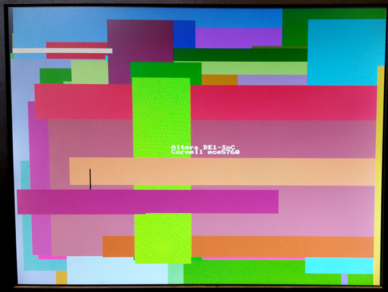
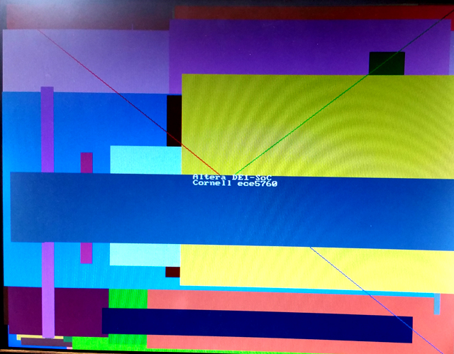
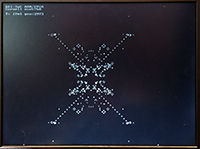

DE1-SoC:
ARM HPS and FPGA
Cornell ece5760
The programming model I wish to use in ece5760 is LINUX running on the ARM processors, talking to hardware on the FPGA through Qsys.
I would prefer not to use design automation tools, like OpenCL, but stay at the level of the Qsys module interconnect, with custom FPGA hardware.
This page documents my first attempts at understanding the programming model.
Standalone programming of HPS using native GCC in UP linux.
The ARM cpus are completely capable of running GCC to communicate with either native HPS peripherials or with the FPGA.
You compile from the command line with the usual Linux syntax. Some projects require compile flags which are noted below.
The document Using Linux on the DE1-SoC shows how to install and use the UP LINUX 2016 image (old LINUX image).
The rest of this page assumes this version of Linux.
Setting up the UP Linux environment:
- Before connecting internet:
- Remember: People write malware for Linux! Practice safe computing!
- Login as root using the serial terminal connection and PuTTY
- Put a strong password on the root account using
passwd
- Disable the linaro account using
passwd linaro -l
- You should not shut down the system by just turning off the power.
To avoid corrupting the file system use:
shutdown -h now
- To reboot use:
reboot
- Cornell requires a fixed, registered MAC address in order to use DHCP. To set this up:
- At the Linux prompt do
ifconfig and copy the MAC address to
https://dnsdb.cit.cornell.edu/dnsdb-cgi/mycomputers.cgi
- Every time you start the board you must execute
ifconfig eth0 down
ifconfig eth0 hw ether <mac addr>
ifconfig eth0 up
/etc/init.d/networking restart
Where <mac addr> the the address you registered
put these commands in /etc/rc.local so that they are executed on startup
- The DHCP server should then assign you an IP address
- If networking does not start then execute
dhclient eth0
- Cornell may require you to use a static address for security
- The Cornell 10space system should be used for any FPGA on the internet
- If you use a static address (e.g. Cornell 10-space) then you may need to specify
an address and
a router address in /etc/network/interfaces Add:
auto eth0
iface eth0 inet static
hwaddress ether <mac addr>
address 10.236.xx.xx
netmask 255.255.255.0
gateway 10.236.xx.1
dns-nameservers 132.236.56.250 128.253.180.2 192.35.82.50
- With a static address, you may need to add DNS servers.
Edit /etc/resolv.conf to add the lines:
nameserver 132.236.56.250
nameserver 128.253.180.2
nameserver 192.35.82.50
Then execute
/etc/init.d/networking restart
- Secure Shell login
- At the Linux prompt do
sudo apt-get install openssh-server
- Use
passwd to add a password to root if you have not already done this!
- Make sure that PuTTY and PSFTP are installed on the Windows machine
- Use PuTTY to SSH to the ARM.
--
Open the IP address assigned by DHCP (Find address using ifconfig)
-- OR use the static address assigned to you
- Use PSFTP to move files to/from the ARM (use
help command)
- GCC
- man page
- To use math library include
-lm option on the command line and <math.h> in the code
- To use pThreads include the
-pthread option on the command line <pthread.h> in the code
- Utilities
taskset allows you to place a process on either ARM processor.
However, Linux attempts to migrate processes to load balance if you do nothing.
htop (sudo apt-get install htop) shows you what is running and on which processor.clamav is an antivirus program you should install using apt-get install clamav
Then you can update the virus database
by using freshclam
and scan the file system using clamscan (options)
- But if the update fails with a locked database then
sudo /etc/init.d/clamav-freshclam stop
sudo freshclam -v
sudo /etc/init.d/clamav-freshclam start
ntp sets network time. get it with apt-get install ntp
You need to edit /etc/ntp.conf to include the line
server ntp0.cornell.edu
Service starts up after a minute or so.
Occasionally I need to restart sudo service ntp restart apt-get sometimes fails with the error "Problem with MergeList ..."
Apparently this is due to a correpted database so
sudo rm -vf /var/lib/apt/lists/*
sudo apt-get update
Then try again
HPS USB Programming
--Using the USB mouse
As explained in stackoverflow, the mouse information is in /dev/input/mice. Reading and parsing the three bytes of information is straighforward.
The test program just prints whatever the mouse sensors read. In a real application, the mouse should be read at a known rate and the speed scaled,
then (usually) numerically integrated to give position.
--Reading keyboard keycodes
As explained in The Linux Daily, keyboard keycodes can be read from /dev/input/eventx. Where 'x' is some digit. The program
keyboard.c requires you to input the device location as a parameter, then
prints keycodes.
HPS pthreads Programming
POSIX pthreads are a light-weight addition to Linux processes that allow many threads to execute independently within one process. The threads are scheduled by the kernel and seem to use the multiprocessor environment well. There are many good resources available to learn pthreads. I liked the LLNL tutorial. Also the CMU tutorial. The HPS GCC recognizes pthreads if you include the -pthread flag on the compile command. Examples from the LLNL site (slightly cleaned up) show how to create threads and use mutex and condition variables. The create example shows that thread creation and execution are async with respect to execution of main. The mutex/condtion example implements two counting threads incrementing the same counter and checking for a certain count. When that count is reached, the count thread signals the condition variable of the watch thread, which prints a message, then the count threads continue on, to their max count.
-- Threaded: Keyboard input, console print, counter
-- This example uses a thread to read the console keyboard, another thread to print what was just typed and zero a counter, and one or two more threads to increment the counter. There is a condition variable which indicates when the print is done and next input can begin (using the shared buffer) and a condition variable wich indicates when the input is done and the print can begin. Clearly, one of them has to be signaled initially for the system to come out of deadlock. This is accomplished (somewhat crudely) by waiting one second and signalling the condition variable.
--
Semaphores are POSIX defined, but not part of pthreads. Including semaphore operations makes the code more readable to me, and makes initialization better defined. With one count thread, and full mutex protection of the count and text buffer, the system will support about 10 million/sec counts while the keyboard and display threads take very small cpu time.
--
With two count threads, and full mutex protection of the count and text buffer, and using the default scheduling, the system will support about 5 million/sec because the scheduler puts the two heavy performance threads on different processors and the mutex operations are apparently slow across processors! A small modification of the code to include pthread_setaffinity_np forces the two counting threads onto one processor. The two threads on one processor can count at the same rate as one thread (of course).
--Threaded: Matlab to UDP Audio
The two-process code from the UDP audio from the section lower on the page
Matlab >udp> ARM receive process >ipc> ARM fpga process >bus> FPGA audio FIFO
was converted to two threads running in a single process. The code requires the the FPGA address header file. To use this you have to load the correct DE1-SoC computer sof file to the FPGA using the QuartusPrime programmer (archive). Running the Matlab script triggers playback of the audio segment by sending a start/reset command to the UDP thread, which then initializes the shared buffer. The Matlab script then blasts audio samples in UDP packets as fast as it can. The sample buffer only holds about 8 seconds of sound at 8 Ksamples/sec. The buffer shared between the two threads is protected by a mutex. After 128 samples have be received, the write_fpga thread fills a FIFO on the FPGA as fast as it can. The FIFO only holds 128 audio samples playing at 48 kHz, so it needs to be filled at least every 3 milliseconds. The thread attempts to fill it every time there is space in the FIFO.
FPGA Programming abstraction for Linux using absolute hardware addresses
The main abstraction from the programming view is to map virtual addresses used by Linux during program execution to physical addresses of memory mapped peripherials. I assume that we are running with root privileges. Opening the device /dev/mem and then using mmap gives access to physical addresses in a limited range determined by the mmap parameters. The code example attempts to blink the HPS LED and read the switch directly attached to port GPIO1bits 24 and 25 respectively. All device addresses are from the HPS Technical Reference Manual. The switch read works, but the LED does not blink. The code was downloaded using copy/paste to the vi editor, then compiled from the console command line with a simple gcc test_led.c -o test_led.
--Speed test the HPS-to-FPGA bus
If the MSEL switches are set correctly (5'b01010) then the default boot process loads the DE1_SoC_Computer.rbf config file (in /home/root) to the FPGA. Running the increment_led program (part of the UP Linux image in /home/root/increment_leds) controls the red LEDs attached to the FPGA side. A slightly modified version of the demo code increments the FPGA red LEDs as fast as possible. Using the DE1_SoC_Computer.rbf included with the UP Linux image, the max toggle speed 830 KHz, so one add and loop takes 600 nSec, which seems slow. Replacing the register increment with a C variable increment, which is then loaded into the register, doubles the toggle speed to 1.61 MHz, for a loop time of 300 nSec. This implies that the bus transactions are dominating execution speed. Avalon bus speed in this case is 50 MHz, or 20 nSec. The transaction must take about 15 bus cycles to transfer a word from the AXI-to-Avalon bus and Avalon-to-parallel i/o port. (But see below for higher speed connect).
--First steps in controlling the FPGA.
This example uses serial control on the ARM to set hex digits and led count rate on the FPGA. Two 32-bit parallel ports were added (using QSYS) to the my_first_ hps_fpga example on the DE1-SoC_v.5.0.1_HWrevF_SystemCD. The parallel otuput ports were wired to a small amount of verilog to blink the red LEDs and to drive the first 4 7-seg digits. The QSYS layout made it easy to add a port, and the exported i/o signal bus is named in the verilog header generated by QSYS. If the parallel port is named pio_test, then the exported signal name is pio_test_external_connection, and the signal which appears in the *.v file is pio_test_external_connection_export. The signal is added to the top-level soc-system module instance.
soc_system u0 (
// === added BRL4 ===
.pio_led_external_connection_export (count_control),
.pio_test_external_connection_export (hex_control),
// === end add ===
.memory_mem_a ( HPS_DDR3_ADDR), // memory.mem_a
.memory_mem_ba ( HPS_DDR3_BA), // .mem_ba
.memory_mem_ck .....
The offsets for the LEDs and hex digits used in the C code are the offsets specfied in the QSYS layout.
The C code, top-level module, and Quartus archive.
A slightly cleaner version puts the hex-digit decoding into hardware and simplifies the C program.
The C code, top-level module, and Quartus archive. The QSYS layout is unchanged
University Program DE1-SoC_Computer_15_1
 This computer system includes support for ARM, Nios, video, audio, and many other items. I converted some code from bare-metal to Linux to run on the UP-Linux distribution. First test is to get VGA display running and test the writing speed. I did a minor reorganization of the address map file and converted one C example to just run the VGA, and update 10,000 pixels as fast as possible.The update takes 1.8 mSec, so the effective pixel writing rate is about 5.5 million pixels/sec. The example also defines a line-drawing routine, but does NOT check pixel bounds. If you write outside the screen bounds, the program segfaults. The image to the left shows one update frame (at 320x340 resolution)..
This computer system includes support for ARM, Nios, video, audio, and many other items. I converted some code from bare-metal to Linux to run on the UP-Linux distribution. First test is to get VGA display running and test the writing speed. I did a minor reorganization of the address map file and converted one C example to just run the VGA, and update 10,000 pixels as fast as possible.The update takes 1.8 mSec, so the effective pixel writing rate is about 5.5 million pixels/sec. The example also defines a line-drawing routine, but does NOT check pixel bounds. If you write outside the screen bounds, the program segfaults. The image to the left shows one update frame (at 320x340 resolution)..
The code was modified to write random rectangles. The write-rate is too fast to see, but the colors are nice.
(at 320x340 resolution). Colors are 16 bit: top 5 bits red, middle 6 green, lower 5 blue.
--Converting DE1-SoC_Computer_15_1 to 640x480

The directions written by Shiva Rajagopal for Qsys 640x480 converstion worked for this system. (system ZIP) The span of the addresses in the virtual-to-real memory map had to be doubled. and, of course, the addressing and colors of pixels had to be modified in the main program. The size of the character buffer was not changed. The color encoding is now 8-bit with top 3 bits red, next 3 green, lower 2 bits blue.
VGA_line(0, 0, 320, 240, 0xe0) ; // red 3-bits
VGA_line(639, 0, 320, 240, 0x1c) ; // green 3-bits
VGA_line(639, 479, 320, 240, 0x03) ; // blue 2-bits
The design was very slow to generate (Qsys) and compile (Quartus). It took around an hour (on my 5 year old machine). Next step is to speed it up. Chopping out the Nios CPUs and some of the support, but leaving the video in/out and audio reduces the generate time to 5 minutes and the compile time to about 22 minutes. (archive). Stripping out the rest of the LED and switch i/o and removing the video-input funciton reduces the compile time to 18 minutes.
A better chopped down system keeps the LEDs, switches, 640x480 video out, and audio. The design is partitioned so that the DE1-SoC computer is in its own partition. Two other partitions are top and the hex display modules. On my new computer (4 core, 32 GB memory, SSD, July 2016), this takes 12 minutes for a full compile. A small change to the hex display partition takes about 8.5 minutes to recompile. A small C code tests the hex display partition. (C code, address header, project ZIP).
-- Mandelbrot set on VGA/HPS

This example is a base-line implementation of a mandelbrot solver which displays using the DE1-SoC computer system explained above. It computes a 640x480 approximation with a maximum of 1000 interactions in about 3.4 seconds, using level -O2 compiler optimization. The code computes about 23 million complex iterations/sec (40 cycles/iteration). The colors are approximately logarithmic in number of iterations at that point. Image. The total number of iterations for all points on the screen and total execution time are displayed. Also included is a routine to erase all text on the screen.
-- Conway's game of life on VGA/HPS
The game of life is a 2D, totalistic, cellular automaton which is compute-universal. The HPS program displays using the DE1-SoC computer system explained above.
It computes a 640x480 cell automaton at approximately 14 frames/sec, using level -O2 compiler optimization. This corresponds to about 4.25 million cell updates/sec. The slow step here is writing the pixels to the frame buffer, which is limited by the bus rate to about 5 million/sec. If you modify the code to be smarter about writing pixels, the speed goes as high as 60 frames/sec, or about 18 million cells/sec, but will depend on the specific content of the screen. More cell state changes will slow down execution.
-- Using two ARM processors to write video and play a tone.
Starting one process to write to the video buffer as fast as possible, and keep the audio FIFO filled, failed above about 8000 pixels per loop, where the FIFO could be filled in each loop if there was space. The easy solution is to start two processes, which are migrated by Linux onto the two processors with both running at full speed. (Quartus archive, combined audio/videocode which failed at high write-rates). The audio code required the math library for sine wave synthesis, which requires compile with the -lm option. The video code is unchanged. And the address header.
-- Using two ARM processors with IPC to display time while writing video and playing a tone.
Starting two processes to maximize bandwidth, requires communication between the processes. This example uses the fixed audio synthesis frequency (48 KHz) to drive a timer/counter which then uses shared memory IPC (interprocess communication) to display the time on the VGA. The both the audio and video code were attached to the same shared memory segment using shmget and shmat. As before, the audio code required the math library for sine wave synthesis, which requires compile with the -lm option. (Quartus archive, address header).
-- A minor modification of both the audio and video code plays a one-octave scale on the audio side and displays the time and frequency on the video side.
-- Cleaning up both the audio and video code puts pixel limit error checking in the video draw routines and better naming in audio program.
-- Adding a disk function (video) to the video code makes particle systems nicer.
HPS to/from PC UDP communication
--UDP communication from ARM to outside world
Sending information to/from the FPGA via the ARM ethernet would be useful for a number of projects. The first code modifies the audio generation code to send the current note being played across a UDP connection to Matlab running on a desk machine. The ARM code opens a socket on port 9090 (do not use ports below 1024) and sends data once/sec to the port. The Matlab code running on the PC opens a UDP object, then just listens and echos the string to the command window. The code is based on the useful UDP material at linuxhowtos.org, particularly server_udp.c.
--UDP communication from outside world to ARM
Sending slow (human rate) commands to a program can be done by setting up a non-blocking UDP receive function. Each time through the main event loop, the program checks for a valid packet. The Matlab code asks the human for a sine wave frequency and sends the number to the ARM. The ARM audio code computes the DDS increment for the frequency and sends the samples to the audio codec FIFO and the video process.
--UDP audio from Matlab >udp> ARM >bus> FPGA audio FIFO
Sending audio rate packets from Matlab code is fairly easy, but setting up a ACK function for sync is not because the Matlab UDP receive function is too slow. The result is an unsynced system that works most of the time, but has to be tuned with a spin-wait loop in Matlab. To further reduce overhead, eight audio samples were sent in each packet by matlab. At the ARM code end, the eight samples were duplicated 6 times each to expand the sample rate to 48 KHz, the default audio rate of the Qsys audio core. The main loop makes sure there is enough space in the FIFO for 48 samples, reads a packet, and loads the FIFO. Audio example file. The video process records elapsed time of audio using memory shared with the audio process.
--UDP audio from Matlab >udp> ARM receive process >ipc> ARM fpga process >bus> FPGA audio FIFO
Decoupling the packet receive from the audio-rate FIFO operation results in more robust timing. The ARM receive process listens for packets and fills a buffer much faster than Matlab can send the packets. The buffer is shared with a second process, which reads the buffer and fills the audio FIFO at 48 Ksamples/sec. An int buffer of length 216 can hold 8 seconds of sound. The FIFO filling process waits for samples to appear in the receive process. The receive process waits for a start/reset command from Matlab. Matlab is sending about 2700 packets/sec each with eight 32-bit audio samples.
Avalon bus-master peripheral driving bus-slaves (with HPS read-out and control)
-- External bus to Avalon Bridge
Student generated modules will need to be Avalon bus-slaves when controlled by the HPS, but under some conditions will need to be bus-masters. For instance, building a module which writes directly to the VGA interface would require a bus-master ability. The first example uses the University Progam External Bus to Avalon Bridge (EBAB) module as a bus-master which addresses either the LEDs or the HEX display to display numbers set on the toggle switches, and with a write-enable using ~KEY[0]. The HPS C-code reads and displays the SW and KEY peripherials. The Qsys layout has just the HPS, parallel ports for the LEDs, HEX display, switches, and buttons, and the EBAB module. The LEDs and HEX display are hooked to the
external-to-avalon
master. The SW and KEY are hooked to the HPS h2f_lw_axi_master. (top-level, hex decoder, project ZIP). This code ignores the Avalon ACK bit and does not read any data.
-- Controlling the bus-master from the HPS
In the second example, the HPS uses a keyboard command interface to choose the HEX or LED device address which is used by the EBAB. The FPGA side has a small state machine which counts time and uses the EBAB to display the count on the HEX or LED devices. The state machine also handles the bus-write setup and waits for the Avalon bus ACK. The Qsys layout converts the switch PIO into an output getting data from the HPS light-weight bus. This new output is used for the device address by the EBAB. (top-level, project ZIP). This example is a model of how a hardware computational unit might be controlled by the HPS and interact with other bus-attached peripherials. The bus transaction from EBAB to HEX display PIO takes two cycles (write, ACK). I tested up to 100 MHz state machine rate, for a bus rate of 50 million/sec.
--
The logical sequence is: A C-program outputs a bus address to the h2f_lw_axi_master address (of the ARM) which is mapped to a PIO unit on the Avalon bus. The PIO unit exports the address value to the FPGA fabric, which also contains the EBAB. The EBAB uses the address (from the PIO) to set its own write address back onto the Avalon bus.
-- Multiple bus-masters to one bus-slave
The Qsys bus generator constructs arbitration hardware for various configurations of masters and slaves. I wanted to test the operation of multiple bus-masters talking to one bus-slave. The previous example was extended to have two EBAB units, one controlled as before with its bus address controlled by a C program. The other was set to always write to the HEX display. The phase of the write-clock was set up so that they write at different times. Each bus-master counts at different rates. The counts are displayed on the HEX displays and for bus-master one, on the LEDs, when chosen. The Qsys layout shows that both the EBAB masters connect to the HEX display. (top-level, project ZIP).
--
A modification of the top-level module changes the bus request rate to 3.1 MHz, uses the SW input to set the delay between bus write-requests, and puts the two write-requests and the two ACK bits on the GPIO_0 port for view on an oscilloscope. If the separation is zero and addresses are set to the same bus_slave, then one write-request is stretched to two cycles (top trace) while the bus is busy with the other. If two different bus-slaves are addressed by the two bus-masters, or the time between write-requests is one cycle or more, then there is no collision and the write-requests are each one state-machine cycle long. Synchronization in the bus-master state machines depends on reading the ACK bits returned from the Avalon bus. Which write-request actually gets stretched, when they are on the same cycle, seems to be randomly determined by race-conditions.
-- VGA display bus_master with HPS/FPGA mixed graphics source
A bus-master to control video display is useful for many projects. Interfacing to the University video suite is challanging because the documentation is scattered or non-existant. The Qsys layout shows the connections to the bus-master at the bottom. You can see in the Qsys layout that both SDRAM and on-chip RAM are used. Both are necessary, but I am not sure how they are related. The interface I finally came up with can write pixels at about 6.1 megapixels/sec, at 640x480 resolution. I had to phase-lock the write cycle to the VGA_BLANK_N signal to avoid confilct with the VGA read cycle. I am not sure why the HPS program does not need to do that. The demo hardware writes a large blue rectangle a the top of the screen (as a background for text drawn by the HPS), then a slowly moving, 8-bit color map, then a diagonal line, and leaves a space at the bottom of the screen for a rectangle drawn by the HPS. The Avalon bus handles contention between the HPS and my bus-master so that graphics from the FPGA fabric can be merged with HPS graphics by simply writing the pixels. In this example, the text overlay is controlled only by the HPS. (top-level module, project ZIP, test image). There is a slight VGA sync artifact on this version.
--
Changing one line of code eliminates the sync artifact, but lowers the write rate to 2.8 megapixels/sec. The condition for starting a write operation goes from
if (state==0 && ~VGA_BLANK_N) begin
to
if (state==0 && (~VGA_VS | ~VGA_HS)) begin
making the start condition tighter and leaving a little slack before the next VGA read so that it does not contend with the second cycle of the write. The problem occurs because the blanking interval end is tested on the first write-cycle, but the write process takes two cycles, thus overlapping the first VGA read, whereas the vertical and horiztal sync pulses are narrower.
-- If we could make the write condition less restricitve, but still shorter than the blanking pulse we could recover much of the write rate, but avoid the sync jitter artifact. By detecting the start of the vertical and horizontal sync pulses we can stretch the pulses to get the performance back up to over 6 megapixels/second. A revised top-level module does this with stable sync performance.
-- VGA display bus_master with FPGA graphics state machine source
In this example, the display bus-master gets pixel color information from a true dual-port, M10K block, RAM based state machine. The graphics are trivial vertical lines, with x position chosen by the DE1-SoC switches and the color by two of the push buttons. Pushing button zero loads the switch and button information to the drawing state machine which populates M10K RAM with the 2-bit pixel colors for the line. The bus-master state machine moves all the pixels in the M10K RAM to VGA display memory by converting the two-bit M10K state to 8-bit color and putting the data on the Avalon bus. Since the M10K RAM is dual ported, the line-writing state machine and bus_master state machine can access memory at the same time. In general for high performance, you would not want to draw every pixel every time like this example does. (top-level module, ZIP)
-- Audio output bus_master
This bus_master state machine reads the FIFO status of the University Program audio interface, and if there is sufficient space in the FIFO, computes a new DDS sinewave sample and inserts it into the left and right audio channel FIFOs. The Qsys layout shows the relatively simple connections. The audio bus_master avalon_master is connected to the audio subsystem avalon_slave input. The design leaves the HPS interface in place, but contention between the two bus-masters for audio channels means that you can use one or the other (but see below for sharing the audio left/right channels). The state machine sets up the FIFO status read, then waits for the ACK. IF there is space in the FIFO, a new DDS sample is computed and written to the left channel, then waits for the ACK.
The right channel is then written. Both channels must be written for the audio interface to work. Waiting for space in the FIFO effectively phase-locks the state machine to the audio-rate clock for sound systhesis (top_level_module, project ZIP).
-- If the audio bus-master hardware only checks that status of the left channel FIFO and only loads the left channel FIFO, and the HPS only
checks that status of the right channel FIFO and only loads the right channel FIFO, then both can write to the audio at the same time. Since nothing is played by the audio interface unless there is data for each channel, the shorter duration channel determines play time. In this example, a WAV file is read by Matlab and samples sent by UDP to the HPS, which runs a thread to watch the UDP connection, and another thread to load the right channel. The hardware audio bus-master loads the left channel FIFO, then stalls until the HPS thread starts filling the right channel FIFO. (matlab program, HPS program, top-level module). The result is that the hardware plays a tone on the left channel during the time that the HPS program loads the right channel. Note that the hardware bus-master checks the top eight bits of the FIFO status word, while the HPS program checks the next eight bits (see section 4.1 of the Audio Core manual). The LEDR display is connected to the left channel FIFO status. When both sources are filling the FIFOs, you can see the contention by the variability of the FIFO depth, but actual audio play not affected.
References:
DE1-SOC literature list
Using the DE1-SOC FPGA by Ahmed Kamel
Stereoscopic Depth on an FPGA via OpenCL by Ahmed Kamel and Aashish Agarwal
Running Linux on DE1-SOC by MANISH PATEL and SYED TAHMID MAHBUB
OpenCL on DE1-SOC Sahil P Potnis (spp66@cornell.edu) Aashish Agarwal (aa2264@cornell.edu) Ahmed Kamel (ayk33@cornell.edu)
Audio Core (Qsys University Program 15.1) local copy
Video Core (Qsys University Program 15.1) local copy
External to Avalon Bus Master (external here means in the FPGA, but not in the Qsys bus structure)
Avalon to External Bus Slave (external here means in the FPGA, but not in the Qsys bus structure)
Copyright Cornell University
August 22, 2016

{kind=link}
{kind=link}
{kind=link}
{kind=link}
{kind=link}
{kind=link}
{kind=link}
{kind=link}
{kind=link}
{kind=link}
{kind=link}
{kind=link}
{kind=link}